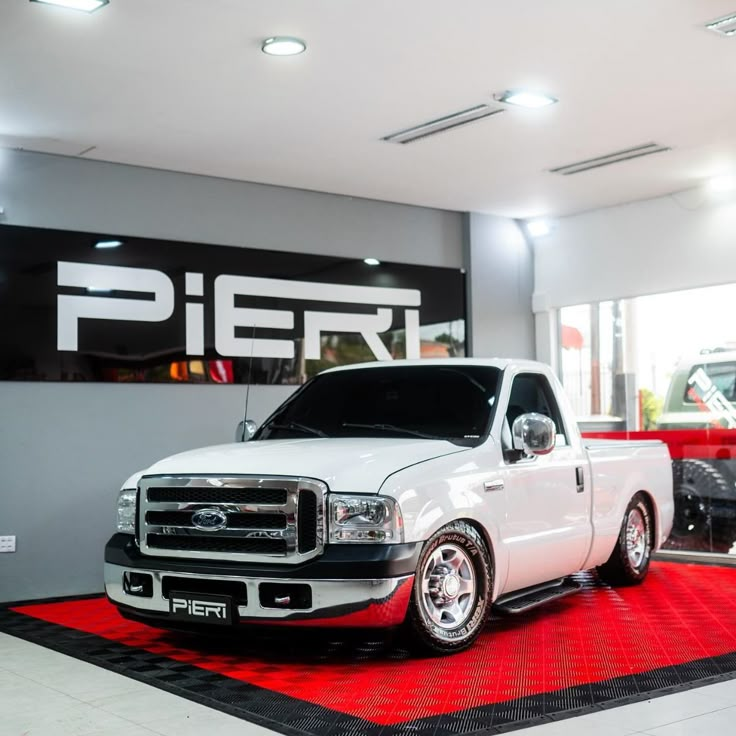
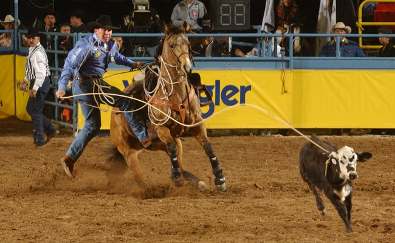
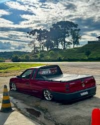

Meus projetos

✅Disponivel ford f250 2003 completa
camionete sem detalhes 2003 completa ar-condicionado vidros eletricos travas eletricas baixo km camionete 0 cartão em ate 12x simulação de financiamento avaliamos sua troca

Decidindo o Futuro: Jovem laçador fora de seu pais vivendo do esporte🤠
adolecente joão vitor decidido a viver do esporte que ama se arrisca a sair de seu pais para ir mundo a fora deixando a saudade para sua familia...

saveiro surf rebaixada quais os trabalhos para andar nessa altura na fixaa!!!
Os trabalhos necessarios para andar nessa altura são cortes na longarinas, pontas de eixos encurtadas, barra de direção encurtadas molas preparadas,amortecedores encurtados e prato modificado essas são as principais modificaçoens para andar na fixa 00